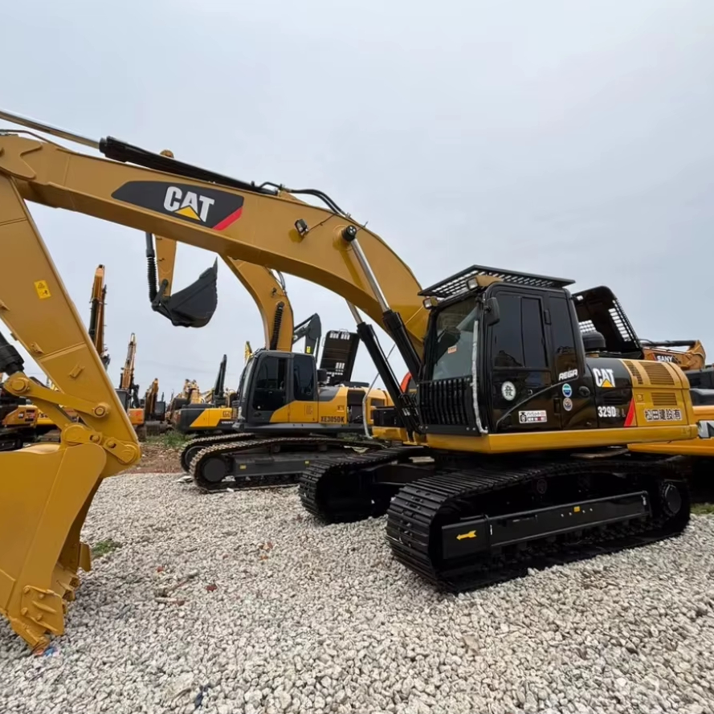

Refurbished Caterpillar Cat 329 Excavator
The Caterpillar Cat 329 Excavator is a versatile and reliable machine designed for medium- to heavy-duty construction, demolition, and excavation projects. Known for its robustness, fuel efficiency, and exceptional hydraulic performance, the Cat 329 is ideal for operators who need a high-performance machine that can handle various tasks on the job site.
Honestly, it's almost impossible to buy a brand new excavator from China. They either don't exist or are made in China. If a Chinese seller tells you their Caterpillar/Komatsu/Volvo/Kobelco/Hitachi is brand new, they're lying. Therefore, a refurbished excavator is your best bet.

Here are the detailed specifications for a refurbished Caterpillar Cat 329E L excavator, structured for your technical documentation and consistent with your annotated library:
Operating Weight and Dimensions
- Operating Weight: ~32,300 kg (71,000 lbs)
- Transport Length: ~10.5–10.8 meters
- Transport Width: ~3.2 meters
- Transport Height: ~3.2–3.3 meters
- Tail Swing Radius: ~3.7 meters
- Track Width: 600–800 mm standard
Engine and Powertrain
- Engine Model: Cat C7.1 ACERT (Tier 4 Interim / Tier 2 in older units)
- Rated Power Output: ~200–204 kW (268–274 hp) @ 1,800 rpm
- Fuel Tank Capacity: ~620 liters
- Travel Speed: 3.5–5.0 km/h
- Swing Speed: ~9.0 rpm
- Altitude Capability: Up to 3,000 m without derate
Hydraulic System
- Main Pump Type: Load-sensing variable displacement piston pumps
- Flow Rate: ~2 × 360–380 L/min
- System Pressure: Up to 35 MPa
- Hydraulic Oil Capacity: ~550 liters
- Control Features:
- Smart Boom Priority
- Swing Priority
- Regeneration circuits for faster cycle times
Performance Metrics
- Bucket Capacity: 1.2–2.2 m³ (SAE heaped)
- Max Digging Depth: ~6.7 meters (22 ft)
- Max Reach (Horizontal): ~10.5–11.0 meters
- Max Dump Height: ~6.5–6.8 meters
- Bucket Digging Force: ~190–210 kN
- Arm Digging Force: ~140–160 kN
Cab and Operator Features
- Cab Type: ROPS/FOPS certified
- Display: LCD monitor with diagnostics and fuel tracking
- Controls: Pilot-operated joysticks with auxiliary hydraulic circuit
- Comfort: Adjustable air-suspension seat, optional HVAC
- Visibility: Panoramic glass, rear-view camera, LED work lights
Smart Features and Efficiency
- Fuel Efficiency:
- Auto idle and engine shutdown
- ACERT technology for combustion optimization
- Emissions Control:
- Tier 2 or Tier 4 Interim depending on build year
- Telematics: Cat Product Link (optional)
- Ambient Capability:
- High temp: up to 50°C
- Cold start: down to –18°C
Attachments Compatibility
- Standard Bucket: 1.2–2.2 m³
- Optional Tools: Hydraulic breaker, demolition shear, ripper, compactor
- Quick Coupler: Hydraulic (Cat Pin Grabber or Smart Coupler)
Refurbishment Scope
Refurbished Cat 329 units typically include:
- Engine Overhaul: Turbocharger, injectors, cooling system
- Hydraulic Restoration: Pump recalibration, valve block testing, hose replacement
- Electrical Diagnostics: Monitor, sensors, wiring harness
- Cab Reconditioning: Seat, joysticks, HVAC, repainting
- Structural Repairs: Boom/bucket welding, bushing replacement, undercarriage rebuild
Overview of the Caterpillar Cat 329 Excavator
The Caterpillar Cat 329 is part of Caterpillar’s mid-size range of hydraulic excavators and is known for delivering an excellent balance of power, speed, and efficiency. Whether it’s digging, lifting, grading, or demolition work, the Cat 329 can perform a wide range of tasks with ease.
Equipped with a powerful engine and advanced hydraulics, this machine is a popular choice for various industries, from road construction to mining and infrastructure development. The Cat 329 is known for its durability, reliability, and operator-friendly design, making it a solid investment for businesses that require a machine capable of working in demanding conditions.
Key Specifications of the Caterpillar Cat 329
-
Operating Weight: Approximately 28,000 - 33,000 kg (61,700 - 72,750 lbs)
-
Engine Power: 180 kW (241 hp)
-
Max Digging Depth: Around 6.2 meters (20.3 feet)
-
Max Reach: Up to 9.5 meters (31.2 feet)
-
Bucket Capacity: Typically 1.0 to 2.0 cubic meters (35.3 to 70.6 cubic feet)
-
Fuel Tank Capacity: About 350 liters (92.5 gallons)
-
Travel Speed: Maximum speed of 5.5 km/h (3.4 mph)
These specifications highlight the Cat 329's capability to handle large excavation tasks, digging at significant depths, and moving materials efficiently.
Performance and Fuel Efficiency
The Cat 329 is built for exceptional performance, allowing operators to complete heavy-duty tasks with ease. With its powerful engine and advanced hydraulic system, this excavator can deliver reliable and consistent results, no matter the job complexity.
Key Performance Features:
-
Powerful Engine and Hydraulics: The Cat 329 comes equipped with a high-performance engine and advanced hydraulic system, which allow for smooth and powerful operation. Whether you're working on soft soils or tough rock, this excavator can handle it all with ease.
-
Improved Fuel Efficiency: The Cat 329 is designed with fuel efficiency in mind. Its engine and hydraulic system are optimized to reduce fuel consumption without compromising on power. This helps reduce operating costs while maintaining the machine’s power output.
-
High Productivity: With its combination of power, speed, and reliability, the Cat 329 is capable of moving large amounts of dirt, rock, and other materials in short periods of time, boosting productivity on job sites. The machine is also built for fast cycle times, improving efficiency during repetitive tasks like digging and lifting.
-
Enhanced Control: The advanced hydraulics provide precise control over the boom, stick, and bucket movements, allowing for accurate and efficient work. This level of control is particularly useful in tight spaces where precision is key.
Durability and Reliability
One of the key reasons for the Caterpillar Cat 329’s popularity is its exceptional durability. Caterpillar’s machines are known for their long lifespan and low maintenance needs, and the Cat 329 is no exception.
Key Durability Features:
-
Heavy-Duty Undercarriage: The undercarriage of the Cat 329 is designed for long-lasting performance, with reinforced tracks and a rugged frame that can handle rough and uneven terrain. This feature is particularly useful in construction and demolition projects where tough conditions are common.
-
Reinforced Boom and Stick: The boom and stick are built with heavy-duty materials that resist wear and tear. This ensures that the Cat 329 can handle heavy lifting and digging operations without sacrificing structural integrity.
-
High-Quality Components: The Cat 329 uses high-strength materials and components, ensuring a long operational lifespan. Whether it’s the engine, hydraulics, or other critical systems, Caterpillar’s quality ensures reliability in the most demanding environments.
Operator Comfort and Safety
Caterpillar places a significant emphasis on operator comfort, which directly affects productivity and safety. The Cat 329 is designed with a spacious, ergonomic cabin that provides excellent visibility and comfort for the operator.
Key Comfort and Safety Features:
-
Comfortable Operator Cabin: The Cat 329 features a spacious cabin with an adjustable seat, climate control, and user-friendly controls. The cabin is designed for comfort, minimizing operator fatigue during long shifts.
-
Excellent Visibility: The large windows and strategically placed mirrors provide superior visibility, ensuring the operator has a clear view of the working area. This enhances safety and reduces the risk of accidents, particularly in busy or congested work environments.
-
Enhanced Safety Features: The Cat 329 is equipped with several safety features, including ROPS (Roll-Over Protective Structures), FOPS (Falling Object Protective Structures), and an optional rearview camera. These safety features provide peace of mind and protect operators from potential hazards on the job site.
Versatility and Attachments
The Caterpillar Cat 329 is designed for versatility, with the ability to work with a variety of attachments that expand its range of applications. From digging and lifting to material handling and demolition, the Cat 329 can take on various tasks with ease.
Common Attachments for the Cat 329:
-
Buckets: Available in a range of sizes and configurations, including general-purpose, heavy-duty, and rock buckets.
-
Hydraulic Hammers: Ideal for breaking rock, concrete, or asphalt during demolition and roadwork.
-
Augers: Perfect for digging deep, wide holes for foundations, poles, or utilities.
-
Grapples: Useful for handling large materials, such as scrap metal, logs, or debris.
-
Quick Couplers: Allow the operator to change attachments quickly, increasing efficiency on the job site.
These attachments allow the Cat 329 to be adapted to a variety of tasks, providing excellent value for companies with diverse project needs.
Advantages of Purchasing a Refurbished Caterpillar Cat 329 Excavator
A refurbished Caterpillar Cat 329 Excavator presents several advantages, especially for businesses that want to get high performance at a reduced cost. These refurbished machines undergo a thorough inspection and reconditioning process, ensuring that they perform like new, but at a fraction of the price.
Benefits of Refurbished Cat 329:
-
Lower Cost: Refurbished Cat 329 excavators are significantly more affordable than new ones, allowing businesses to save money while still obtaining a high-performance machine.
-
Reconditioned to Optimal Performance: Refurbished machines are thoroughly inspected and tested, with all necessary components repaired or replaced. This ensures the Cat 329 performs just like a new unit.
-
Warranty Protection: Many refurbished Cat 329 excavators come with warranties, offering peace of mind and protection against unexpected repair costs.
-
Environmentally Friendly: By choosing a refurbished machine, businesses can reduce their environmental impact, as it helps extend the life of existing equipment and minimizes the need for new manufacturing.
Maintenance Tips for the Caterpillar Cat 329 Excavator
To keep your Caterpillar Cat 329 running at its best, regular maintenance is crucial. Here are some tips to help maintain the machine’s performance:
Recommended Maintenance Practices:
-
Hydraulic System: Regularly check hydraulic fluid levels and replace filters according to the manufacturer’s recommendations. Inspect hoses and seals for leaks to prevent performance issues.
-
Engine Maintenance: Change the engine oil and replace filters at recommended intervals. Ensure the engine is running at optimal temperature and coolant levels.
-
Undercarriage: Inspect the undercarriage frequently for signs of wear. Keep tracks clean and properly lubricated to avoid premature wear.
-
Cooling System: Monitor the radiator and cooling lines for blockages or damage. Ensure the system is functioning properly to avoid engine overheating.
Conclusion
The Caterpillar Cat 329 Excavator is an excellent choice for medium- to heavy-duty excavation and construction projects. With its combination of power, durability, and fuel efficiency, this machine is designed to provide reliable performance for years. Opting for a refurbished Cat 329 offers significant cost savings while still providing the same performance and reliability as a new machine.
With proper maintenance, a refurbished Cat 329 can continue to serve your business for many years, helping you achieve higher productivity while keeping operating costs low.
Our Commitment
- 2 years / 4000 hours warranty.
- EPA certified.
- No sweatshop labor.
Contacts

- [email protected]
- Youtube Instagram Facebook
- Navigation: G206 (Sishu Bridge) in Changfeng County, Hefei City, Anhui Province, 200 meters north to the east